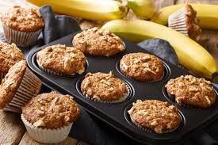
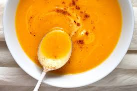
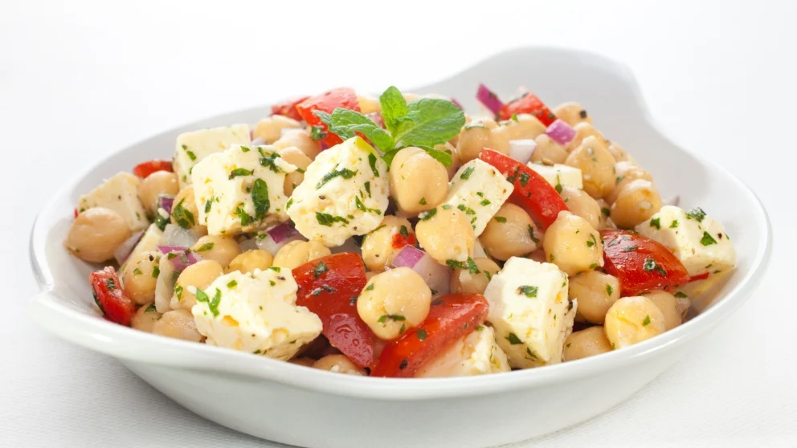
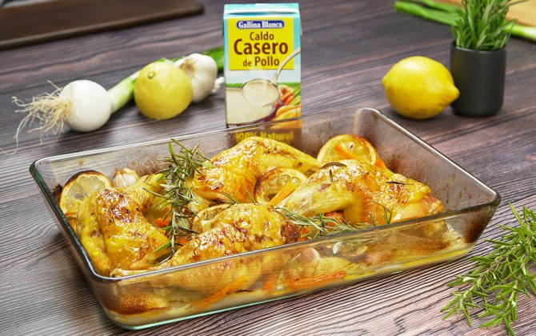
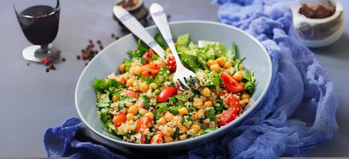
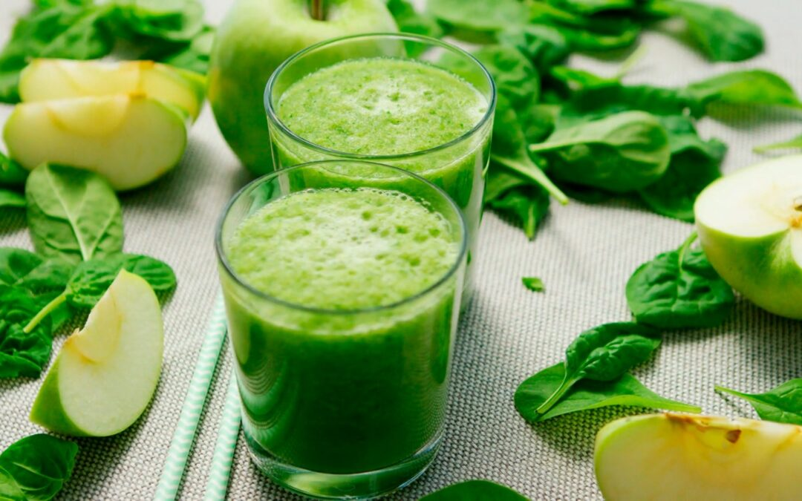
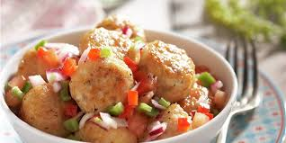
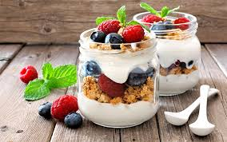

Salmón al Horno con Espárragos
Un plato exquisito y saludable de salmón al horno, ideal para una cena rápida y nutritiva.
Descubre las 3 mejores recetas del día que combinan sabor y salud.


Nuestra Recomendación Semanal 🥦
-
Muffins de Avena y Plátano
Recomendación TOP 🏆//
Muffins saludables de avena y plátano, ideales para un desayuno nutritivo o un snack energético....más
-
Sopa de Calabaza y Jengibre
Recomendación TOP 🥇//
Una sopa cremosa de calabaza con un toque de jengibre, perfecta para disfrutar en días frescos....más
-
Ensalada de Garbanzos y Feta
Recomendación TOP 🥈//
Una ensalada fresca y colorida de garbanzos con queso feta, ideal como acompañamiento o plato principal....más
-
Pollo al Limón y Romero
Recomendación TOP 🥉//
Pechugas de pollo marinadas en limón y romero, asadas a la perfección para una cena saludable....más
Top 1 De La Semana 🥇
Tazón de Yogur con Frutas y Granola //
Un tazón nutritivo de yogur, frutas frescas y granola, perfecto para un desayuno o snack saludable.
Este tazón es una opción deliciosa y equilibrada, repleta de proteínas, fibra y antioxidantes. Ideal para comenzar el día con energía. ...más
Descubre más recetas
Noticias & Eventos ⏱
-
Taller de Cocina Saludable
Aprende a preparar recetas nutritivas y deliciosas en un taller práctico, ideal para todos los niveles. ¡Reserva tu lugar y transforma tu forma de cocinar!...más
-
Colaboración con Expertos
Estamos emocionados de colaborar con nutricionistas y chefs locales para ofrecer contenido exclusivo y consejos prácticos sobre alimentación y salud. ¡No te lo pierdas!...más
Recetas Favorias 💚
- Popular
- Reciente
-

Ensalada de Quinoa y Garbanzos
(3.0 / 5)
-
Muffins de Avena y Plátano
(2.0 / 5)
-
Ensalada de Garbanzos y Feta
(1.0 / 5)
-

Batido Verde Energético
(4.0 / 5)
-

Albóndigas de Pavo y Verduras
(3.0 / 5)
-

Parfait de Yogur y Frutas
(5.0 / 5)
-
Las mejores recetas de sándwiches del mundo aquí
(4.0 / 5)
-
Las mejores recetas de panadería del mundo aquí
(4.0 / 5)
-
El mejor sándwich del mundo
(4.0 / 5)